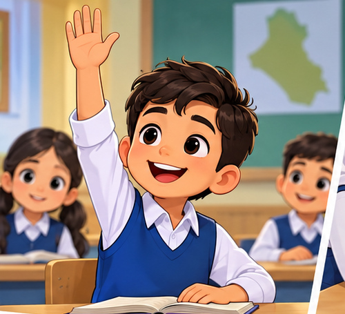
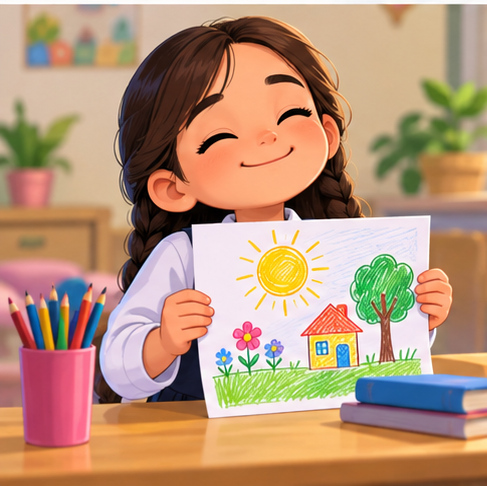
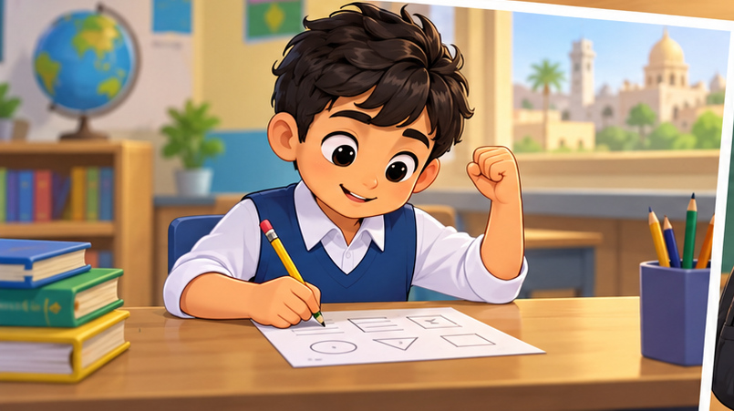
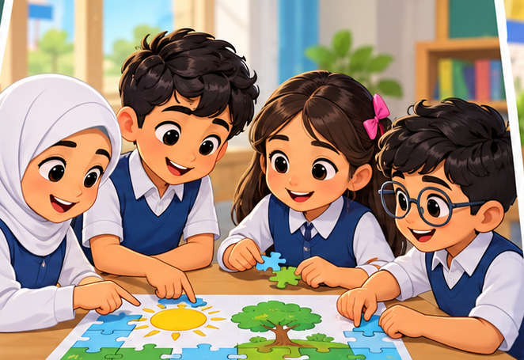

الثقة بالنفس

الثقة بالنفس تعني أن أؤمن بقدرتي على المحاولة والتعلم والنجاح.
سؤال للنقاش: ما الشيء الذي تشعر أنك تجيده؟
أتكلم أمام الآخرين
عندما أتحدث بهدوء وأرفع صوتي بوضوح، أتعلم أن أعبر عن أفكاري بثقة.
سؤال للنقاش: ما الموضوع الذي تستطيع أن تتحدث عنه أمام زملائك؟
أفرح بإنجازي
من حقي أن أفرح بما أنجزته، حتى لو كان الإنجاز بسيطًا.
سؤال للنقاش: ما إنجاز صغير تفتخر به؟
أفتخر بعملي

أقدر جهدي وأعرض عملي دون خوف من أن يكون مختلفًا عن أعمال الآخرين.
سؤال للنقاش: كيف تشعر عندما تعرض عملًا أنجزته بنفسك؟
أحاول بنفسي

الثقة لا تعني أن أعرف كل شيء؛ بل أن أبدأ وأحاول قبل أن أستسلم.
سؤال للنقاش: ماذا تفعل عندما تواجه سؤالًا صعبًا؟
التشجيع يقوّيني
كلمة طيبة من المعلم أو الأسرة تساعدني على الاستمرار، لكن قوتي تبدأ من داخلي.
سؤال للنقاش: ما العبارة التي تحب أن تسمعها عندما تحاول؟
أقبل التشجيع
عندما يشجعني الآخرون أبتسم وأشكرهم، ثم أواصل العمل بثقة.
سؤال للنقاش: كيف ترد عندما يقول لك أحد: أحسنت؟
أصدقائي يشجعونني
الصديق الجيد يساعدني على المحاولة ولا يسخر من خطئي.
سؤال للنقاش: كيف تستطيع أن تشجع زميلًا مترددًا؟
أشارك مع فريقي

التلميذ الواثق يشارك بأفكاره ويستمع لأفكار الآخرين دون خوف.
سؤال للنقاش: ما الفائدة من مشاركة فكرتك مع المجموعة؟
أرفع يدي وأشارك
المشاركة داخل الصف فرصة للتعلم، وليس مطلوبًا أن تكون إجابتي صحيحة في كل مرة.
سؤال للنقاش: ماذا يحدث إذا أخطأت في إجابة أمام الصف؟
الخطأ لا يوقفني
الخطأ جزء من التعلم؛ أتعرف إلى سبب الخطأ ثم أحاول مرة أخرى.
سؤال للنقاش: ما الذي يمكنك تعلمه من الخطأ؟
أحترم نفسي
أحترم نفسي عندما أتكلم عنها بكلمات جيدة وأتجنب قول: أنا لا أستطيع.
سؤال للنقاش: ما العبارة الإيجابية التي تستطيع أن تقولها لنفسك؟
لا أقارن نفسي بالآخرين
لكل تلميذ نقاط قوة مختلفة، والأهم أن أتقدم مقارنة بنفسي بالأمس.
سؤال للنقاش: في أي شيء تريد أن تتحسن عن نفسك السابقة؟
أشجع نفسي
أستطيع أن أقول لنفسي: سأحاول، أستطيع أن أتعلم، وسأتحسن مع التدريب.
سؤال للنقاش: اختر جملة تشجيع تقولها لنفسك اليوم.
أنا قادر وأستطيع
الثقة بالنفس تكبر بالمحاولة والتدريب والمشاركة، خطوة بعد خطوة.
سؤال للنقاش: ما خطوة شجاعة ستقوم بها في المدرسة من اليوم؟
⛶
السابق
1 / 15
التالي